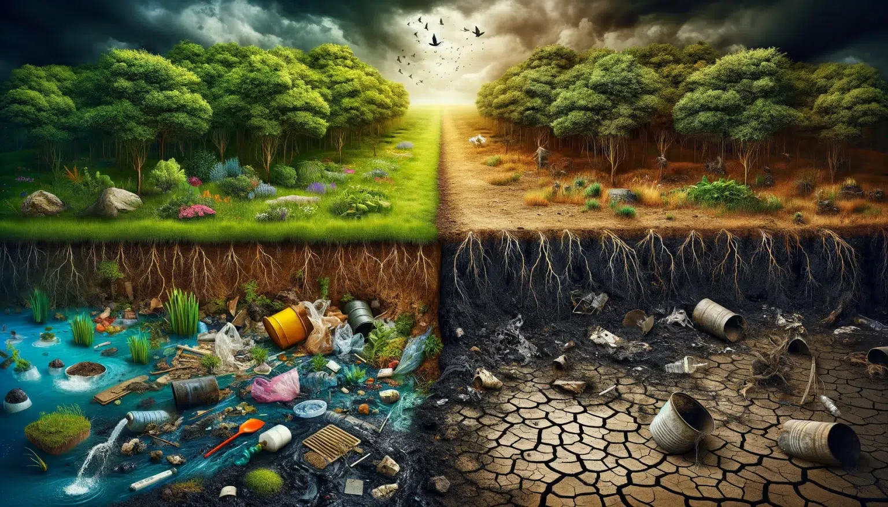
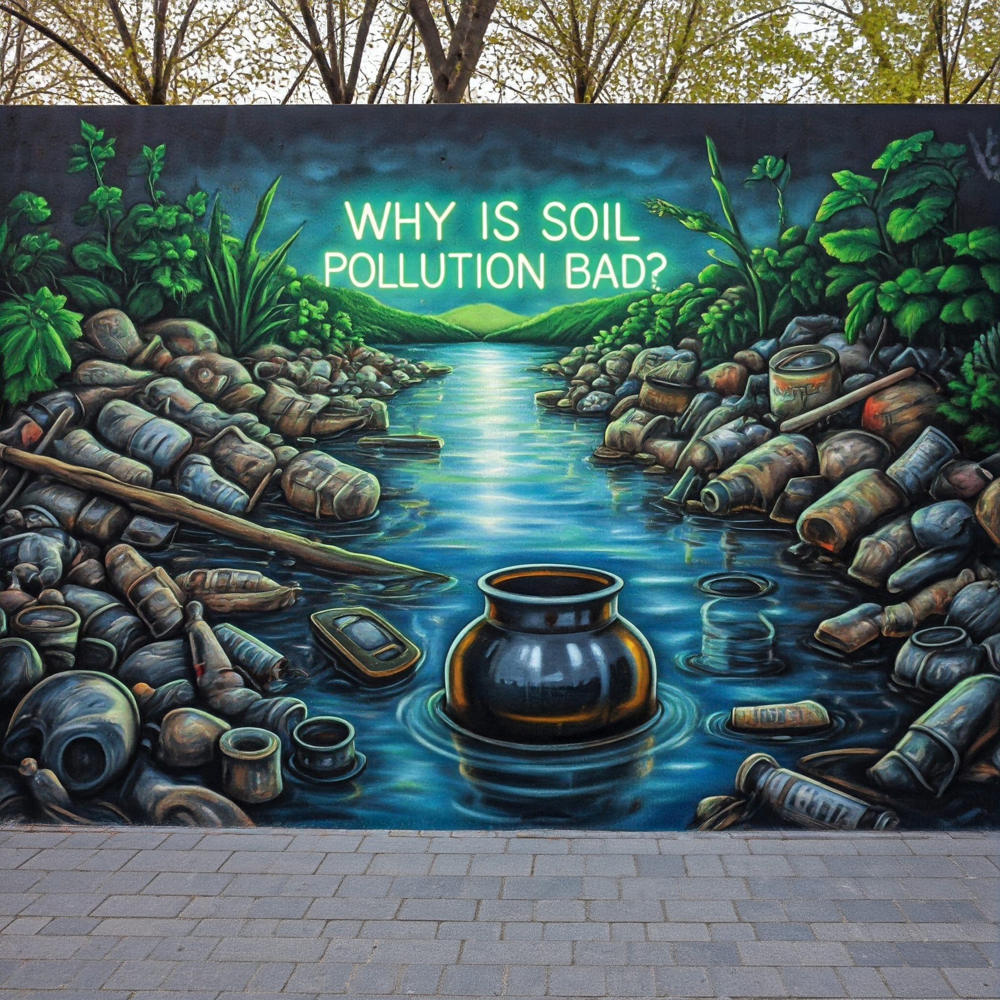
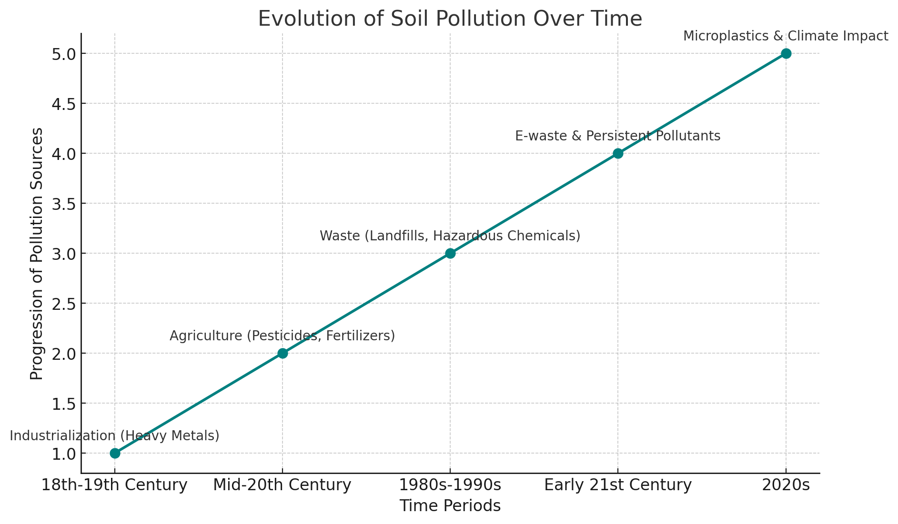
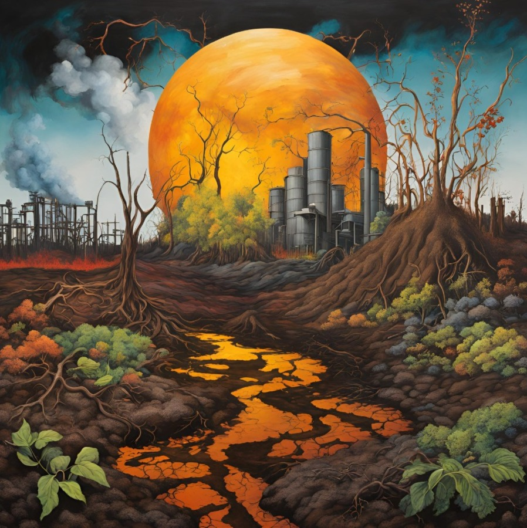

What is Soil.
Soil is a natural resource composed of a mixture of minerals, organic matter, water, air, and living organisms, forming the upper layer of the Earth’s crust through the weathering of rocks and the decomposition of organic materials over time. Structured in layers known as horizons, soil varies in composition, texture, and color, with the top layer, or topsoil, being particularly rich in nutrients and essential for plant growth. Its importance is multifaceted: soil serves as the foundation for plant growth, providing the necessary nutrients, water, and support for agriculture, forestry, and horticulture. It acts as a natural filter that absorbs and stores rainwater, helping to regulate the water cycle and prevent flooding. Additionally, soil is a habitat for a diverse array of organisms, including bacteria, fungi, and insects, which contribute to nutrient cycling and overall ecosystem health. It also functions as a carbon sink, storing carbon dioxide and helping mitigate climate change, while playing a crucial role in the cycling of essential nutrients such as nitrogen and phosphorus. Beyond its ecological functions, soil provides the foundation for infrastructure, holds cultural and historical significance, and has economic value by underpinning agricultural productivity, which is vital for food security. Protecting and managing soil health is critical for environmental sustainability, food security, and overall human well-being.
What is 'Soil Pollution'?
Soil pollution refers to the presence of toxic chemicals, pollutants, and contaminants in soil that degrade its quality and harm living organisms. These pollutants can come from industrial activities, agricultural chemicals, improper waste disposal, and other sources. Soil pollution can affect plant growth, contaminate food crops, and leach into groundwater, posing risks to human health and ecosystems. Addressing soil pollution involves understanding its sources, impacts, and implementing measures to reduce and remediate contamination.

Why is Soil Pollution Bad?.
Soil pollution poses significant threats to environmental integrity and the health of living organisms. Contaminants in the soil can impede plant growth, reduce agricultural yields, and lead to food contamination, posing health risks to humans and animals. Additionally, these pollutants can leach into groundwater, compromising drinking water supplies and disrupting aquatic ecosystems. The adverse effects extend to microorganisms and beneficial insects essential for soil fertility, ultimately disrupting the food chain and ecosystem health. Exposure to contaminated soil can cause various health issues, including skin rashes and respiratory problems. Economically, soil pollution degrades agricultural land, reduces food production, and increases remediation and healthcare costs. Therefore, addressing soil pollution is crucial for protecting environmental health and the well-being of all living organisms..

How Soil Pollution Has Changed Over The Years.
Soil pollution has transformed over time, heavily influenced by industrialization, agricultural practices, waste management, and growing environmental awareness. During the early industrial era, factories began releasing heavy metals and chemicals, leading to localized soil contamination with little regulation. In the post-war period, the widespread use of synthetic pesticides, herbicides, and fertilizers introduced persistent chemicals into the soil, raising early environmental concerns. By the late 20th century, increased consumer waste and industrial activities led to contamination from heavy metals and hazardous chemicals, prompting stricter regulations. In the early 21st century, e-waste became a significant contributor to soil pollution, along with microplastics and persistent organic pollutants (POPs). Today, microplastics, climate impacts, and bioremediation efforts are shaping our response to soil pollution, with sustainable practices increasingly prioritized to mitigate these ongoing issues..

Soil Pollution Ruining The Planet.
Soil pollution is a critical environmental issue characterized by the contamination of soil with hazardous substances, posing significant threats to ecosystems, human health, and global sustainability. Signs of soil pollution include unusual odors, discoloration, and the presence of waste materials such as plastics and industrial chemicals. Affected vegetation often exhibits stunted growth or chlorosis, indicating that the soil can no longer support healthy plant development. Rigorous soil testing can reveal the presence of heavy metals and pesticides, underscoring the extent of contamination. This degradation compromises soil quality, disrupts beneficial microorganisms, and diminishes biodiversity. As polluted soil loses its ability to sustain plant life, it exacerbates food insecurity and poses health risks for communities reliant on contaminated land for agriculture. Additionally, toxins can leach into groundwater, threatening drinking water supplies. Ultimately, the decline in soil health undermines the planet's capacity to support life, exacerbating climate change and reducing agricultural productivity. Addressing soil pollution is essential for safeguarding environmental integrity and promoting sustainable development.

Causes of Soil Pollution.
Soil pollution is primarily driven by anthropogenic activities, significantly impacting environmental health. Key contributors include industrial operations, which release hazardous waste, heavy metals, and chemical byproducts into the soil through improper disposal or spills. Agricultural practices, particularly the excessive use of fertilizers and pesticides, lead to chemical runoff that contaminates soil quality. Improper waste disposal, including plastics and electronic waste, exacerbates this issue, as landfills can leach toxic substances. Mining activities introduce heavy metals and pollutants, disrupting local ecosystems, while urbanization contributes to soil contamination through construction debris, vehicle emissions, and sewage discharge. Additionally, oil spills during extraction and transportation pose serious risks to soil integrity. The use of untreated wastewater for irrigation can further compromise soil health by introducing pathogens and toxins. Addressing these challenges necessitates robust regulatory frameworks, sustainable agricultural practices, and effective waste management strategies to mitigate the adverse effects of soil pollution on human health and the environment.